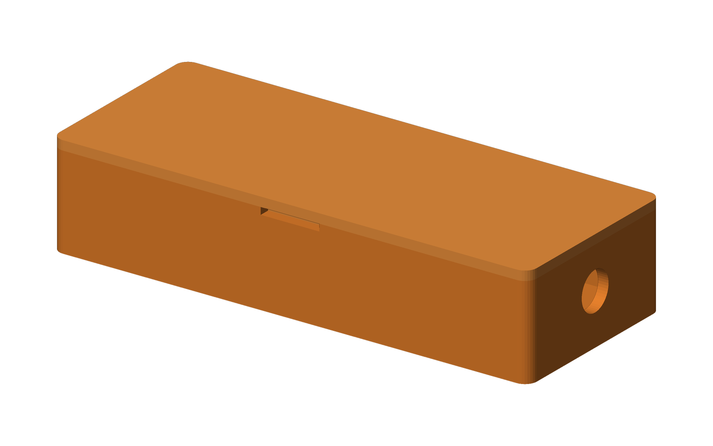
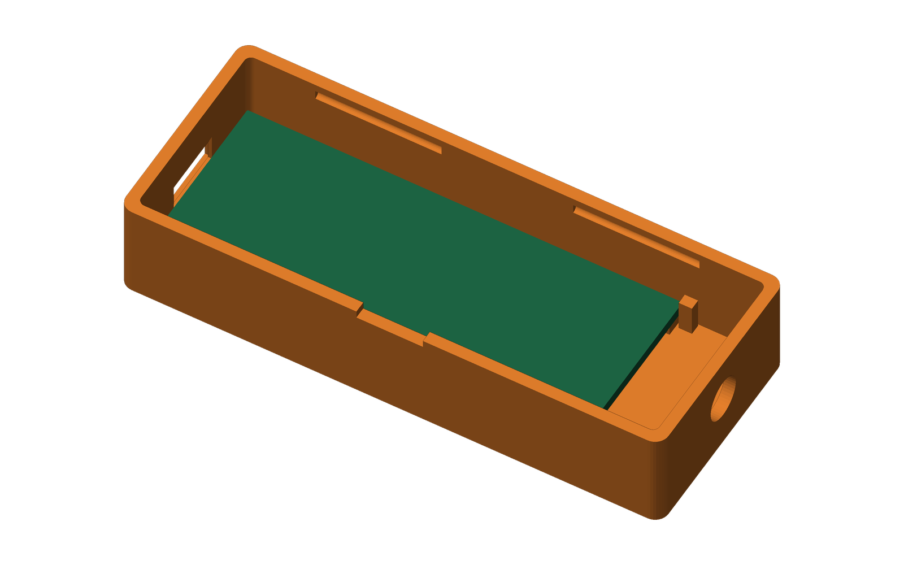
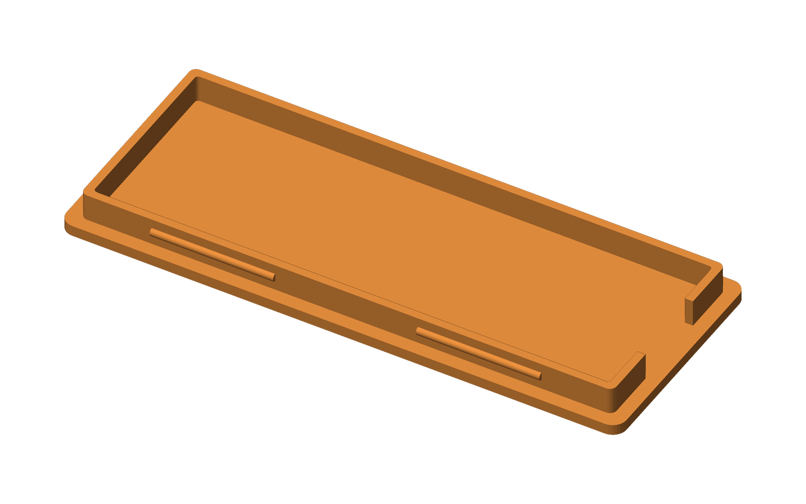
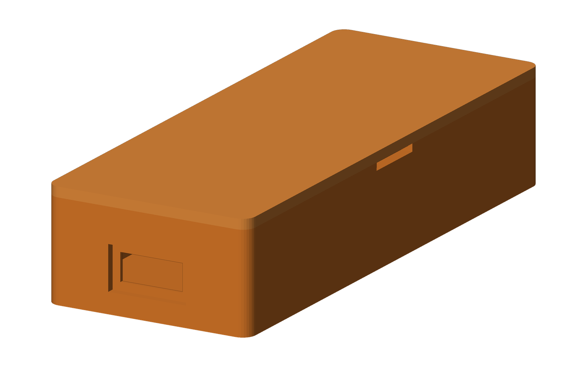

Free cases to 3D-print for the Meshtastic® radios I use with MeetPoint. Each one comes with the STL files, ready to print, and the parametric model, so you can change it to fit your own board, antenna or cable.
Meshtastic radio
Heltec Wireless Tracker V1.2
A small, closed case for the Heltec Wireless Tracker without a battery: the USB-C sits flush with the wall, the antenna goes out on an SMA connector at the other end, and the lid snaps on with no screws.

Closed: SMA hole at the end, notch to open it.

The board sits on four supports, against the USB wall.

The lid, printed this way up: lip and snap ribs.

USB-C end, with room for the cable's plug.
Size and print
Outside: 81.6 × 32.5 × 17.4 mm
PETG (best if it will sit in the sun) or PLA
0.2 mm layers, no supports
Base floor down; lid flat face down, lip up
Assembly
Lay the board in the base, USB-C against the wall at the USB end.
Fit a panel-mount SMA connector in the hole at the other end (8 mm nut on the inside).
Press the lid on until it clicks. Open it with the notch on one long side.
Make it yours
SNAP_R: 0.5 if the lid is too stiff, 0.7 if it comes off by itself
ANT_SPACE: 15 mm for a thick antenna cable
Screen window, button pins and a charge-LED hole are one switch each
Positions were measured from a photo (±0.5 mm): print the base first and check the fit
The ZIP has both STL files, the model, these pictures and a README. To make the STL files again: pip install manifold3d trimesh, then python3 heltec_case.py.
More cases will follow here. Free to print, change and share, with credit (CC BY 4.0). Printed one? I'd love to see it: get in touch.